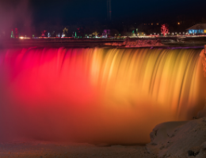
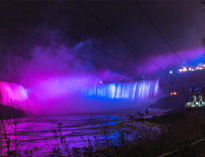
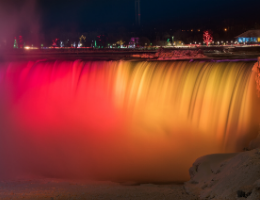
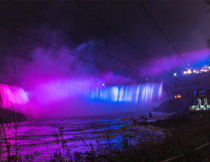

.png)
.png)
.png)
.png)
HISTORY OF NIAGARA FALLS
The Formation of Niagara Falls
Niagara Falls consists of two waterfalls on the Niagara River, which marks the border between New York and Ontario, Canada: the American Falls, located on the American side of the border, and the Canadian or Horseshoe Falls located on the Canadian side. To the right of the American Falls is a smaller waterfall that has been separated from the American Falls by natural forces, which is usually called Bridal Veil Falls.
It is estimated that 12,000 years ago when the falls were formed, the edge of the falls was as much as seven miles further down river than it is today. Until the 1950s, when the flow of water began to be controlled, the brink of the falls moved backward an estimated three feet every year because of erosion. Year after year, the formation continues with the annual freezing and thawing of the Niagara River, along with gradual erosion and periodic rock-falls. Remedial work has been completed to preserve the Falls and the volume of water has been reduced by diversion for hydroelectric power.
TICKETS & ATTRACTION PASSES
All of your favourite things to do in one place! Get tickets for the the best attractions, events and activities Niagara Falls has to offer and get ready for your trip to explore Niagara!
JOURNEY BEHIND THE FALLS
Traverse the network of tunnels that take you deep through the rock behind the Canadian Horseshoe Falls and make your way to the outdoor observation decks that sit at the base of the Falls.
$21.95NIAGARA FALLS TOUR
Free time in Niagara Falls (time for attractions like the Hornblower, Skylon Tower, Journey Behind the Falls and more), Niagara-on-the-Lake, Niagara Whirlpool Rapids, wine tasting and more.
$89.00NIAGARA SKYWHEEL
Enjoy a graceful scenic journey that delivers magnificent views of both the Horseshoe and American Falls. Climate controlled gondolas provide year round sightseeing comfort, day and night.
$12.99FIREWORKS
Who doesn't like a night with fireworks and how beautiful it is when they explode high above the sky? It is spectacular, a night with colourful firework displays high over the mighty falls!
What better way to end your night than with spectacular fireworks at the river’s edge, creating an unforgettable sight! Nightly shows all summer, plus select dates in spring, fall and during the Winter Festival of Lights. (Schedule is subject to change depending on weather, events, and other circustances)
Join us for the 27th anniversary of Canada’s longest-running fireworks series! Starts mid May 2020, every Friday, Saturday, Sunday and holidays at 10:00 p.m. Enjoy a spectacular free fireworks display.
Travel tip: If you view the fireworks from Queen Victoria Park during peak season be sure to position yourself with a clear view overhead before they start. Then watch out for the stampede of people who didn’t!
NIGHTLY ILLUMINATION
Every evening beginning at dusk, Niagara Falls is transformed into an incredible, multi-coloured water and light masterpiece.Special lights are housed in the Illumination Tower, next to Queen Victoria Place; on the roof of Table Rock Centre, at the brink of the Horseshoe Falls; and deep in the Niagara Gorge, across from the American Falls. Together, these lights work to create a breathtaking view not to be missed. The falls are also lit in custom colours for short durations to mark significant dates in support of charitable causes.
Niagara Falls illumination is a must for any visitor! Every night of the year, the three waterfalls that make up Niagara Falls are illuminated in glowing colours creating a stunning vista that can be viewed from near and far, from 8:30 pm to 2:00 am.
.png) 



.png)
Map & Directions
Directions from Q.E.W. Southbound
Take Highway 420 exit on the left (east). Go straight through the lights at Stanley Avenue. Stay on Roberts Street. Exit Roberts Street at Victoria Avenue. Turn left on Victoria Avenue. Turn right onto Queen Street. City Hall is at 4310 Queen Street, on the right-hand side.
Directions from Q.E.W. Northbound
Take highway 420 exit on the right (east). Go straight through the lights at Stanley Avenue. Stay on Roberts Street. Exit Roberts Street at Victoria Avenue. Turn left on Victoria Avenue. Turn right onto Queen Street. City Hall is at 4310 Queen Street, on the right-hand side.
Contact & General Inquiries
If you have any questions regarding your travel plans to visit Niagara Falls, Canada, information on our website or concerns about your trip feel free to contact us and we will get back to you as soon as possible. Our team is ready to help you #ExploreNiagara and get the most out of your adventure. See our staff listing to find the department to best serve your needs. You may also call our Visitor Center at (716) 278-1794.